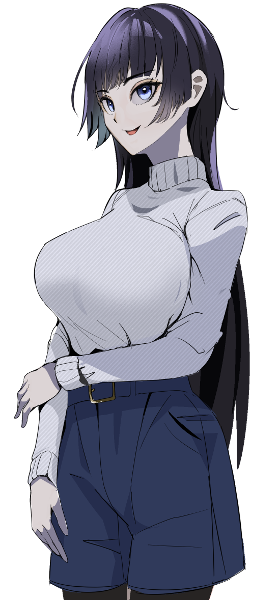
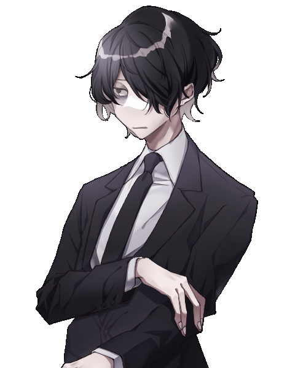
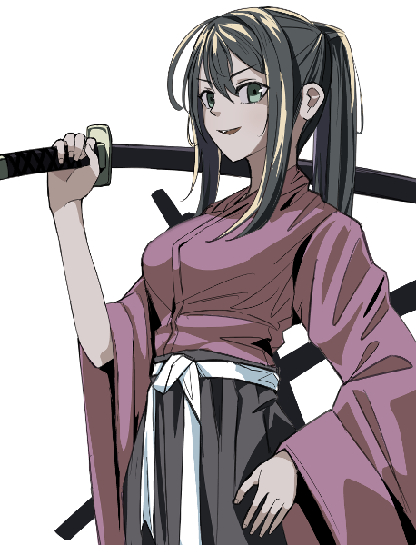
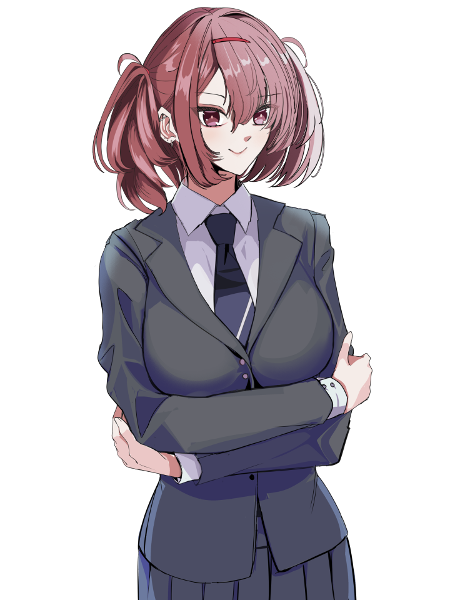
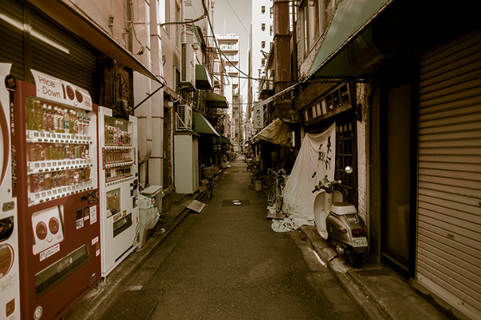
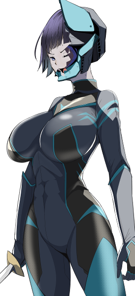

GM:LISP
メインログ /
雑談ログ
Character Sheet
PC1：赤鷺緋鷺 (キャラシート) PL：ふろずん
PC2：紡木林檎 (キャラシート) PL：タンゴ
PC3：R.O.S.A. -P. (キャラシート) PL：カピバラ
PC4：天道恋花 (キャラシート) PL：めい
Index
◆Pre play◆
HO&PC紹介
◆Opening Phase◆
01 作り物のヒーロー
02 24時間働けますか？
03 無知の代償
04 捜査は躍る
◆Middle Phase◆
05 嵐の襲来
第3回目開始ポイント
Pre play
HO&PC紹介
GM :
本シナリオは次のオリジナルルール：一般オーヴァードを採用します。
通常のルールで作成されるキャラクター（以下、エリート級オーヴァード）に対し、本ルールで作成されるキャラクターを一般オーヴァードと呼ぶ。
一般オーヴァードは、覚醒したてで戦闘経験が浅かったり、かつては一線級のエージェントだったが病で力を失ったり、レネゲイドへの適合が進んでいなかったり、そもそも能力が戦闘向きではなく別分野のスペシャリストだったりするキャラクターである。
一般オーヴァードはエリート級オーヴァードとエキストラの中間のような存在として扱う。
・一般オーヴァードがエリート級と戦闘を行った場合、判定なしで戦闘不能となる。
・一般オーヴァード同士の戦闘はエリート級オーヴァード同士と同様に処理する。
・エキストラはエリート級と同様に演出で倒すことができる。
・戦闘以外の判定はエリート級と同様に行うことができる。
GM :
こんな感じです。誰が一般で誰がエリートなのかはGMに聞いてくれれば適宜回答します。強者に踏みにじられないよう強く生きていこうな……
天道恋花 :
ざぁこ♡ ざこざこ♡ ざこオーヴァード♡
赤鷺ヒロ :
歯を食いしばれよ、最強！俺の最弱はちっとばっか響くぞ！！してくぜ！！(死)
紡木 林檎 :
雑魚ですみません…………強く生きます……
R.O.S.A :
逃げるは恥だが役に立つという言葉が染みる...
GM :
ではでは、PC1から順に自己紹介を簡単にお願いします～。ひとことくらいでも全然大丈夫です。
赤鷺ヒロ :
おう！了解だぜ！！

赤鷺ヒロ :
PC1の「赤鷺ヒロ」だぜッ！よろしくなッ！！
赤鷺ヒロ :
ヒロは人気ヒーロー番組の主役を演じてるが、当人は”ヒーローらしからぬ性格”なんだぜッ！詳細は公式サイトをチェックしてくれよなッ！
赤鷺ヒロ :
過去、FHのモルモットになっていた時期があって、
PC4の天道恋花ちゃんさんの夫、先代”閃光戦輝サンブレイザー”天道翼さんに助けられてるぜッ！！
赤鷺ヒロ :
だが、ヒロを助けるため、天道翼さんは「天下爆散！」してしまってッ……
うう……その事件がヒロのトラウマになってるぜ……！
赤鷺ヒロ :
基本、危なくなったら「逃げる」以外のコマンドがなくなるぜッ……！！
赤鷺ヒロ :
戦闘スタイルは《一閃》を使用した白兵スタイル！ ラ〇ダーキックで怪人どもをやっつけてやるぜッ！
赤鷺ヒロ :
ウソだぜ！ 《一閃》の全力移動で逃げてやるぜ！！
赤鷺ヒロ :
以上！ちなみにヒロ本人はこんな話し方しないぜッ！！よろしくなッ！！
GM :
ありがとう！ モラルが終わってる撮影現場（※本編とは関係ない）にも負けず頑張って欲しいぜ！
GM :
PC1のHOはこちら
◆PC1用ハンドアウト◆
創作の世界だけでない、本物のヒーローを目指すアクション俳優
・ロイス：葵カヤ
あなたはこの春から人気特撮アニメシリーズに出演中の俳優だ。
シリーズ常連のベテラン俳優からドラマ初挑戦のアイドルまで様々なキャストを交えて撮影は順調。
今日も普段通り撮影が始まるはずだったが、あなたは体調の異常で医務室に運ばれる。
目を覚ますと、他のスタッフも次々倒れ撮影は中断していた。一体スタジオに何が起きたのか？
葵カヤ :
シナリオロイスは同じく終わってる撮影現場に投入されたアイドルです。よろしくね。

赤鷺ヒロ :
うおおおおおおッ！アイドルだぜッ！！生で初めて見るぜッ！！肌きれーだぜッ！！よ～～し、一緒に火だるまになって撮影がんばろうなッ！！
葵カヤ :
よろしくお願いしますね。でも火だるまはちょっと……（遠慮）
赤鷺ヒロ :
炎慮だなんて……クッ、奥ゆかしい女の子だぜッッ……
GM :
ではつぎはPC2、お願いします！

紡木 林檎 :
紡木 林檎、17歳のUGN情報工作エージェントです！
花の青春時代をブラック労働につぎ込む、哀れな隠キャ女学生です……
紡木 林檎 :
性格の指針は卑屈/悲観的だけど正直/強気。
自分は弱いしUGNの仕事も好きじゃないけど、やらないといけないという使命感だけは強固。
正直すぎて思ってることを口にしがちです。ウソがそもそも下手。
紡木 林檎 :
能力は心の関係性を糸に見立て、糸を引けば引力を発生させることができます。
物体のみならず精神も引っ張ることが出来るが、一般人ならともかくオーヴァードを動かす為には大きな「想い」が必要で普段は出来ません。
紡木 林檎 :
情報工作も戦闘も三流のエージェント。
一般人相手なら薬剤も駆使してなんとかやれているという具合。
仕事にはうんざりしているが、それでも誰かがやらないといけない事というのも理解しているので渋々やってます。
紡木 林檎 :
以上！
GM :
つむりんありがとう！HOはこんな感じ。
◆PC2用ハンドアウト◆
UGNの裏方として人知れず働く苦労人
・ロイス："編集長"碓井幸一
あなたは記憶処理を得意とするUGNの一員だ。特に大きな事件もない比較的平和なn市。
とはいってもUGNが暇なはずもなく、近隣支部から押し付けられた記憶処理に日々奔走。
早くも今月の過労死ラインを超えた頃、あなたの元へ日本支部長から事件発生の報が入った。
GM :
職場がヤバいことになってヤバい上司から追加の仕事が来ます。強く生きましょう。
紡木 林檎 :
いつものだね
紡木 林檎 :
雑草魂見せましょう！
碓井幸一 :
そして今回の支部長はこの人です。頼りになりそうだね。

紡木 林檎 :
頼りない……ひょろひょろなよなよだ……(クソ正直)
碓井幸一 :
そ、そんな本当のことを言わなくてもいいじゃないか……！
GM :
ではつぎ！PC3よろしくお願いします！

R.O.S.A :
フルネームはR.O.S.A -P.
n市に居ついてるはぐれアンドロイドです
「人の代替として活動する自動人形を作成する」ことを目的のUGNのプロジェクトの一環として作られました！
この個体は初期のプロトタイプ版なのでオーヴァードとしての力はよわよわです
プロトタイプが製品版より性能がいいわけないだろ！！
R.O.S.A :
色々あってプロジェクトが頓挫したので、n市に打ち捨てられました。
しかしX-PROUDに拾われた後に再起動を果たしました！
その後、X-PROUDでガキどもをカモにしてひと財産築き上げることに成功、やったね
GM :
やったね！ 本当にいいのか？？
R.O.S.A :
しかし、オーヴァードとしての実力を看過されたのか貸した金がほとんど帰ってこない状況に陥ってます
ガキがよ...
GM :
実にFHらしいロボだ……HOはこちら！
◆PC3用ハンドアウト◆
自覚なくFHに加担する、世界の真実を知らないオーヴァード
・ロイス："教授"
あなたは東京を根城とする不良グループ「X-PLODE」n市支部の一員だ。
最近リーダーが良い取引先を見つけてきたらしく、裏ルートから超能力が身につくという怪しいクスリや抗争に使える武器を大量に入手しグループは急激に勢力を拡大、独立の噂も出てきている。
今日は荷物を下水道に運び込む仕事を頼まれた。
なんでも取引先の"教授"とかいう顧客の依頼で簡単な生物実験に協力するとのことだが……。
GM :
ロマサガ以来の下水道で金策スタートです。3Kに負けず頑張っていこうな
R.O.S.A :
こき使いやがって...人権問題ですよ！
？ :
ロイスの教授についてはまだ秘密ですが、OPでは代わりに小間使いとしてこのねーちゃんが現れます。

？ :
まったく金とはいいものでござるなぁ！
R.O.S.A :
むむっ、侍風の見た目に似合わぬ守銭奴の予感！
？ :
武士も食わねど高楊枝というやつでござるよ～
R.O.S.A :
ほんとうでござるかぁ～？
GM :
では最後！PC4お願いします！
天道恋花 :
はーい
天道恋花 :
だが、しかし
天道恋花 :
PCの紹介をする前に、まずはこの男について語らなければならない……。

天道恋花 :
そう、彼の名は天道翼────閃光戦輝サンブレイザーの変身者だ！
天道恋花 :
説明しよう！ 閃光戦輝サンブレイザーとは！！
天道恋花 :
UGNに所属する特撮オタクの天才科学者・東映が作ったアーマメントベルト・ブレイザーライザーで変身する、紅蓮の超戦士のことである！
天道恋花 :
十年前、サンブレイザーの変身者に任命された翼は、UGNのエージェントとして悪のFHエージェントやジャームと熾烈な戦いを繰り広げて来た！
天道恋花 :
しかし彼の戦いの日々は一年前に終わりを告げる！ 赤鷺ヒロを捕えていたFHの施設での戦いで、敵のボスと相打ちになってしまったのだ！
天道恋花 :
だが……サンブレイザーの魂は、新たな変身者へと受け継がれていた！！

天道恋花 :
彼女は天の道を行き恋の花を咲かせる女、天道恋花！ 何を隠そう、翼の嫁である！！
天道恋花 :
女子中学生程度にしか見えない幼い見た目！ 元気で明るいギャル！ だが実は今年で三十歳！ しかもレネゲイド関連事件担当独立捜査課、通称R担に所属する刑事だ！！
天道恋花 :
恋花は元々は普通の人間で、生活安全課少年係所属だった！ しかし、一年前の翼の死を引き金にオーヴァードに覚醒してしまう！！
天道恋花 :
彼女は凹んだ！ 愛する旦那の死！ そして今まで知らなかった、レネゲイドに侵された世界で少年少女が日常を守るために戦っていたという現実！！
天道恋花 :
こんなの少年達を守るお巡りさんとしていつまでも落ち込んではいられない！ 翼の死を振り切り、恋花はレネゲイド事件に関われるR担に移動！！
天道恋花 :
そして映に駄々をこねまくってブレイザーライザーを譲って貰い────サンブレイザーの二代目変身者となったのだ！！！
天道恋花 :
最後に、恋花の力について解説しておこう！ まず、シンドロームはサラマンダー/バロールのクロスブリード！
天道恋花 :
その性能は防御に特化しており、《炎陣》でカバーリング！ 《孤独の魔眼》で範囲攻撃の対象を単体化！ そして《時の棺》で敵の判定を自動失敗！
天道恋花 :
しかし攻撃エフェクトは一切ない！ サンブレイザーの正規変身者である翼と違い、適合率の低い恋花はその力を完全には引き出せていないからだ！
天道恋花 :
だがそれでも戦え、天道恋花！ 愛する旦那への想いを力に変えて、子供達の未来を守るのだ！！
天道恋花 :
閃光戦輝サンブレイザー！ 日曜午後九時から放送中！！
天道恋花 :
～おしまい～
GM :
いまから始まるよ！！！
GM :
この卓のオーヴァードは戦いでは弱ェかもしれないが激アツなハートは他の卓の奴らにも負けないぜ、ハンドアウトはこんな感じ！
◆PC4用ハンドアウト◆
R担の刑事（庶務係）
・ロイス："アルジャーノン"
あなたは警視庁のR担に所属する刑事だ。とはいっても荒事に直接関わることは少なく、事件発生時の道路封鎖や自治体・企業との調整が主なあなたの役目だ。
今日はFHが放ったとみられる生物兵器、コードネーム"アルジャーノン"による被害を抑えるため道路封鎖と対象の確保にあたっていた。
何としても被害を最小限に留めなければ。
天道恋花 :
アルジャーノン、明らかに…ボス枠なのだ！
天道恋花 :
頑張って確保します、例え相手がエリートでも
GM :
その心意気、ヒーロー！
武者小路英貴 :
HOロイスのアルジャーノンとの邂逅は先の話になりますが、OPでは道案内役として年下の上司、武者小路英貴警部が登場します。

天道恋花 :
え、かわいい～！
武者小路英貴 :
よろしくぅ～★
天道恋花 :
陽キャの警察だ、よろしくよろしく！
GM :
自己紹介ありがとう！ ではでは、オープニングフェイズに入っていきます！
天道恋花 :
わぁい、よろしくおねがいします！
Main play
Scene01 作り物のヒーロー
GM :
PC1のオープニングです。登場はヒロくんのみ！
赤鷺ヒロ :
1d10+39 登場侵蝕(1D10+39) ＞ 9[9]+39 ＞ 48
GM :
結構飛ばしてるぜ～
赤鷺ヒロ :
ヒーローだからね
控室

GM :
某日、東京近郊n市、某スタジオ控室。
GM :
多くのドラマが利用するこのスタジオで、今日は人気特撮アニメ「真心ヴァイザーライジング」の撮影が行われようとしている。
GM :
番組の主なターゲットは未就学児から小学生ほどの低年齢層。しかし娯楽の多様化したこの時代、一緒に観る父親母親も退屈させないような迫真のクオリティが求められるのはどの業界も同様だ。
GM :
あなたも気を引き締めてスタジオに入る……と、そこには先客。
葵カヤ :
誰より早くスタジオ入りしていたのはイヤホンで音楽を聴きリラックスする凛とした黒髪の少女。
葵カヤ :
正統派のオーラを纏いながら、誰も聞いたこともないバンドの曲を好んで聞き、お昼になれば並べられたロケ弁の中から一番人気のない助六弁当をいつも取っていく、そんなどこかズレた感性が共演者には印象的だろう。
葵カヤ :
ヒロインのひとりとしてレギュラー出演中のアイドル、葵カヤだ。

赤鷺ヒロ :
「(挨拶……はしないほうがいいか……リラックスしてるみたいだし……)」軽く会釈だけして、部屋に入る。
赤鷺ヒロ :
「(あいかわらず綺麗な顔してるな……アイドルって言ってたっけ……)」
赤鷺ヒロ :
「(共演している相手のリサーチくらいはするべきなんだろうけど……撮影期間は忙しすぎて、まだチェックできてないんだよなあ……)」撮影の過酷さの反動で、休日は爆睡してたら終わるヒロであった。
赤鷺ヒロ :
人気番組の主演らしからぬ態度で、気付かれないようにコソコソと隅の方に座る。
葵カヤ :
そんなあなたの気配を察知してか、イヤホンを外して後ろを向く。
葵カヤ :
「赤鷺さん、おはようございます。いつも早いですね」
赤鷺ヒロ :
「……あ、おはようございます」完璧に気配を殺したつもりだったのだが、すぐ気付かれたことに少し驚きながら、挨拶を返す。
赤鷺ヒロ :
「早いって言っても、葵さんほどじゃないですよ、これくらいは普通です」
葵カヤ :
「赤鷺さん……本当にこの作品に対して真剣なんですね。いえ、みんな同じなんだと思いますけれど」 どこか嬉しそうに
葵カヤ :
「私も、負けないようにしないと」 しばらく芸能界の一線を離れていた彼女にとってこの作品は復帰作、気合いの入れようが違うというものだ。
葵カヤ :
それゆえに、演技のときは表情の硬さがなかなか抜けないのかもしれないが。
葵カヤ :
「撮影始まってしばらく経ちますけど……そういえば、こうやって落ち着いて話すのって初めてかもしれないですね」
赤鷺ヒロ :
「ああ……そういえば、そうですね……？ 二人となると初めてかも……？」
赤鷺ヒロ :
「(え、現役アイドルと二人で何を話せばいいんだ、おれ……！？)」
葵カヤ :
「今では慣れましたけど最初、ビックリしましたよ。ヴァイザーの俳優さんってスーツでの演技も自分でこなされるんですね」
赤鷺ヒロ :
「(あっ、そっかそっか、演技について話せばいいよな普通に)」
葵カヤ :
「てっきり専門のアクターさんが入ってるものかと……」
赤鷺ヒロ :
「ああ、ビックリですよね、俺もスーツアクターの方がやってるのかと思ってましたよ」
赤鷺ヒロ :
「でも『真心ヴァイザーシリーズでは、俳優がすべて兼任してるぞ』って監督が」
赤鷺ヒロ :
※そんなことはない。普通ならCGで演出するところを、リアリティ至上主義の監督に騙され、危険なスタントを強いられているのであった。
葵カヤ :
「え！？ 本当ですか……？」
赤鷺ヒロ :
「ええ、前シーズンの真心ヴァイザーの飛行機上で戦うシーンも、勿論そうっていう話です」
赤鷺ヒロ :
「一体どうやって撮ったんですかね……やっぱり偉大だな、先輩たち……」
葵カヤ :
「……そ、そうなんですか」 何か釈然としない顔をしている。
赤鷺ヒロ :
「……？」監督のホラ話を信じきっているので、カヤの態度に首を傾げる。
葵カヤ :
「あの、私、お父さんがヴァイザーの俳優だったんですけれど……」 いわゆる2世タレント
葵カヤ :
「そんなことあったかなあ……って。でも、子供には大変なところを見せないようにしてたのかもしれないですね」
赤鷺ヒロ :
「それはそうですよ」
赤鷺ヒロ :
「俺だったら、もし子供がいたら"ブレイバードフォーム"の撮影の裏話とかしません」
赤鷺ヒロ :
「……ほら、あのフォームって、スーツを燃やしながら撮るじゃないですか」
葵カヤ :
「そうですね。最初見たときは目を疑いました」
赤鷺ヒロ :
「監督が『初回変身は派手に』って爆薬を盛りすぎたせいで、誘爆して吹き飛びましたからね、セットごと」
葵カヤ :
「そ、そんなことが……！？ 私、初回は登場していなかったら居なかったんですけど……それってよくあることなんですか？」
赤鷺ヒロ :
「いえ……よくはないですね、流石に……」
赤鷺ヒロ :
「撮影現場の地形まで変わったせいで、観光業界からクレームが入って、めっちゃ怒られたらしいです監督」
葵カヤ :
「ああ……それで初回以降は遠征ロケないんですね……」
葵カヤ :
「そういう、やりすぎちゃうのは良くないですけど……みなさん、いいものを作るために一所懸命に頑張ってるんですよね」
葵カヤ :
「私も負けていられないですね。今日もアクションシーン、頑張ります」
赤鷺ヒロ :
「今日は確か、怪人プルトンと徒手格闘するシーンでしたよね」
赤鷺ヒロ :
「火だるまになりつつ肺を焼かず呼吸する方法とか、溺れながら生きのびる方法とか、いろいろアドバイスできると思うんで、何か困ったときはいつでも相談してください」笑顔で
葵カヤ :
「た、頼りにさせて貰いますね……」 さすがに洒落にならなすぎてちょっと引いている
スタッフ :
そうして演技についての話題に花を咲かせていると
スタッフ :
「おはようございまーす。葵さーん、メイクの時間ですー」
葵カヤ :
「あ、もうそんな時間でしたね。では撮影でまた」
赤鷺ヒロ :
「ええ、また」背中を見送る
GM :
そうしてカヤは部屋を出て行く。気づけば集合時間になり、スタッフも別室に揃っているようだ。
GM :
入れ替わりで控室に見慣れた顔の男が入ってくる。
監督 :
「よーヒロちゃん。調子どーよ？ スタジオの方は火薬マシマシで準備万端だからさ、今日もお茶の間の子供たちに向けてバシっと頼むわ！」
赤鷺ヒロ :
「ぁ……え……？ 火薬マシマシ……？ ブレイバードフォームの撮影あるんですか、今日……？」
監督 :
「いや本当は来週の予定だったんだけどさー。急にスポーツチームとのコラボ回が企画されてどーーしても一週ぶん詰めないといけなくなったみたいでね」
赤鷺ヒロ :
「……ま、待ってください監督、おれにも心の準備ってものが」
監督 :
「お、いいねその感じ！ いや最近余裕が出てきて落ち着いちゃったかなと思ってたところなんだよね。やっぱりヒーローは追い詰められてこそ真価を発揮するものだよ！」 聞いてるけど聞いていない
赤鷺ヒロ :
「な、何を言って……！？ 美術さんから火薬は控えめにって言われてましたよね……！？ どうして逆に盛ってるんですか……！？」
赤鷺ヒロ :
「おれ、あの世の翼さんとコラボしたくないですよ、まだ……！？！？」
監督 :
「翼さん？？ 誰のことか知らないけど、美術さんには僕から言っておくから君は心配せず生き残ることだけ考えてくれれば大丈夫だって」
赤鷺ヒロ :
「…………」絶句
監督 :
「じゃあそういう感じで、今日はちょっと忙しくなるからね。ああ、そういえばさっきカヤちゃんと二人で話してた？ 脚本さんが珍しいねーって言ってたけど」
赤鷺ヒロ :
「え、あ……いや、はい……まあ、話してましたけど……」あまりの衝撃に、しどろもどろになっている。
監督 :
「カヤちゃんねぇ。ルックスよくてアクションも出来る子連れてきてって紹介で来てくれて、そこはバッチリなんだけどねぇ」
監督 :
「やられるときとか、男の子とちょっといい感じになるときの演技が守りに入っちゃってるっていうか……あのくらいの年の女の子にはそのへん難しいのかねぇ？ どう思うよ、ヒロちゃんはー」 監督的には納得行っていないらしい
赤鷺ヒロ :
「(こっちの生死がかかっている状況でそんな質問する……！？)」
赤鷺ヒロ :
「演技はおれも経験なかったから、よく分かんないですけど……」
赤鷺ヒロ :
「あの子、アイドルなんですよね……？ 応援してくれてる人達とか考えたら、ある程度は仕方ないんじゃないですか……？」
監督 :
「おー、正論！ まあそれもそうかあ。いや勿体ないなあ、アクション俳優専任になってくれんかなあ」
赤鷺ヒロ :
「たしかに才能はあると思いますけど……、やりたいコトかどうかは別ですから……」少なくとも自分には、この道を勧めるコトは出来ない。普通に危険すぎるからだ。この監督の下での撮影では、命がいくつあってもたりない。
監督 :
監督と話し終え、スタッフ一同本番へと準備を進めて行く。
GM :
……撮影開始の時刻も迫ってきたところで、急に女性スタッフが叫ぶ。
GM :
「キャー！！！ ネズミ！ 赤鷺さん、背中にネズミが！！」
赤鷺ヒロ :
「キャーーッ！？！？ ネズミ！？！？！？！？」生死がかかった撮影で緊張状態だったこともあり、猫型ロボットのように取り乱す。
GM :
チクっ、と首元に痛みが走る。
GM :
振り返ると、一匹のまるまると太った大きなネズミが梱包された大道具の山に逃げ込んで行くのが見えるだろう。
赤鷺ヒロ :
「は、はあはあ……ふう……」
赤鷺ヒロ :
「こ、コホンコホン……初めて見ましたね、あんなに大きいネズミ……」何事もなかったように平静を装う。
GM :
衛生管理に気を使っているスタジオに珍しい……と驚くスタッフ一同。
GM :
しばらく駆除の時間をとってから撮影に入ることがキャストへ告げられた。
GM :
……キャストが続々と控え室に戻っていく中、カヤは思案顔で現場を確認している。
赤鷺ヒロ :
「……どうしました？監督の爆薬のことで心配でも？」声を掛ける
葵カヤ :
「いえ、それも心配ですけど……」
赤鷺ヒロ :
「……？」それ以上に心配することなどあるだろうか。いや、ない。
葵カヤ :
「あの、ネズミに噛まれて……何ともないですか？」
GM :
言われてみれば……何だか熱っぽいような気がする。
赤鷺ヒロ :
「え、ああ……そういえば、身体が熱いような……？」極度の緊張のせいだと思っていたが……
GM :
……徐々に違和感に気づく。あなたはこの感覚に覚えがある。
GM :
これはレネゲイドを用いた攻撃だ。
GM :
みるみるうちに全身に焼けるようなダメージが回っていき、やがてそれは意識を保っていられないほどに強くなる。
赤鷺ヒロ :
「あ、れ……おかしい、な……まだ撮影はじまってもないのに、身体が燃えている、みたいに……」
GM :
何かがおかしい。本来ならこの程度のダメージはオーヴァードの再生能力で回復できるはずだ。だが、今はそれができない。
葵カヤ :
「赤鷺さん？ ……赤鷺さん！ 大丈夫ですか！？ 赤鷺さんッ！！！」
GM :
転がる視界。カヤの呼ぶ声が遠くに聞こえ、それきりあなたの意識は暗闇に落ちて行く……。
GM :
シーンエンド。
GM :
ロイス取得・変更などあればお願いします！
赤鷺ヒロ :
HOロイスのカヤちゃんを憧憬/不安のN表で取得！監督の魔の手にかからないか不安です
GM :
了解です！真っ当な不安。
Scene02 24時間働けますか？
GM :
PC2のオープニングです。登場はつむりんのみ！
紡木 林檎 :
31+1d10(31+1D10) ＞ 31+7[7] ＞ 38
N市 市街地

GM :
N市(n市ではない)某所。
GM :
動揺しながらまくしたてる青年に、あなたは上司である記者風の男とともに"取材"を試みていた。
青年 :
「お、俺は見たんだ！ オールバックのオッサンが悪魔みたいな爪で少年を引き裂いて――」
碓井幸一 :
「なるほど。それは大変でしたね。もういいですよ」
GM :
記者風の男は、ボールペンの後端を彼に向けると取りつけられたスイッチを押す。
GM :
ピカッ、と一瞬眩しくボールペンが光ると、青年は電池が切れたロボットのようにバタリとその場に倒れた。
碓井幸一 :
「ふう、これで一通り済んだかな」
碓井幸一 :
「紡木さん、”後処理”を頼むよ」 何事もなかったように、ひどく疲れた様子であなたにそう命じる
紡木 林檎 :
「はぁい……」
あからさまに嫌そうな声で、渋々男の胸に触れる
紡木 林檎 :
男の胸から見えない糸を手繰り寄せて、近くにあった電柱へ結びつけた。
紡木 林檎 :
「終わりです。………しばらく、この人の関心はこっちの電柱に向かいますよ……」
紡木 林檎 :
「直に"眼鏡の男"のことも忘れていくんじゃないでしょうか……」
碓井幸一 :
「あー、やっぱり君もそう思う？ この件またアイツの仕業なんだろうな……今期に入って3回目だよ」
碓井幸一 :
「まあ、彼の話はもうやめよう。疲労が増すだけだから。しかし悪いね、こんな朝まで付き合わせてしまって」
碓井幸一 :
目の下にクマを作り、栄養ドリンクをぐっと飲み干しながら言う。
GM :
時刻は深夜30時。とっくの昔に日は登り、駅は都心へと出勤するサラリーマンでごった返し始める頃。
GM :
あなたと”支部長”の碓氷はようやく業務を終えた。
紡木 林檎 :
「悪いと思うなら、呼ばないでくださいよぉ……」
諦めきったため息で喉を震わせる。
碓井幸一 :
「僕のガジェットで記憶を強制処理するとどうしても前後の文脈に不自然さが生まれるからね、念には念を入れろと日本支部長からの指示だよ」
碓井幸一 :
「なんせ今回はコトがコトだからね……」
紡木 林檎 :
「いいんです、いいんです……分かってますから。」
「豪奢なカーペットも、破れるのは小さなほつれからですから……」
紡木 林檎 :
「…………はあ〜〜。」
そうしなければならないとは頭では分かっていても、徹夜明けの疲労感が陰鬱な音色を立てる。
GM :
先日、N市にて大規模なアウトブレイク――凍結されたジャームたちの脱走事案が発生。
GM :
逃げ出したジャームが次々に事件を起こし、UGNはその対応に奔走、この有様というわけだ。
GM :
本日、UGNは電波ジャックを目論むFHエージェントと市内のランドマークでもある電波塔で交戦。
GM :
派手なエフェクトの応酬になった末に塔は大破し、FHの目論見は防いだもののその光景を推定200の市民が目撃することとなり、しわ寄せは隣のn市まで及んだ。
GM :
あなたたちの懸命の記憶処理により、明日の学校で電波塔で大立ち回りを繰り広げるヒーローが話題になることもないはずだ……多分。
GM :
……支部員一同、身も心もへとへとだが、一応は学生の身のあなたはまだある程度配慮されているようで
碓井幸一 :
「ともかく今日は休みにしよう。いくら僕がオーヴァードだからってさすがに7徹は洒落にならないよ……」 支部長などこの有様である。
紡木 林檎 :
「うぇ………風呂とか入れてるんですか……？」
碓井幸一 :
「いやいや休憩時間でシャワーくらいは浴びてるよ！ だからそんな反応しないでくれ！」
紡木 林檎 :
「………ほんとですかね……ちょっと臭うような……」
碓井幸一 :
「ぐ……最近娘も僕の服を一緒に洗濯するのを気にするようになってきたし……世知辛いぞ」
紡木 林檎 :
「………パパくさい………」
碓井には気安いのか、冗談めかして
碓井幸一 :
「ンン゛！！」 さすがにダメージが大きかったのか、沈む
紡木 林檎 :
「あっ、すみません……クリティカル入っちゃった」
碓井幸一 :
「ふ、不幸だ……とにかく今日はお疲れ様」
碓井幸一 :
「次はいつ休めるかわからないから、せめてしっかり休養を取ることにしよう」
紡木 林檎 :
「………ウチ、この後学校です……」
「シャワーしか浴びれない………」
碓井幸一 :
「そっそれは……その、UGNの傘下の学校だったりは……」
紡木 林檎 :
「あはっ、あははっ……それなら情報処理担当のウチが常駐する理由なくないですか……？」
碓井幸一 :
「ま、まあ……今日くらい行かなくてもどうにかなるんじゃないか。僕もあんまり学校行ってなかったし……」
紡木 林檎 :
「たしかに……サボる、その手があったか……！」
一筋の光明が差し込む
碓井幸一 :
「青春時代をドブに捨てた僕に教えられることは多くないけど、単位を落とさないサボり方なら……」良くない大人
GM :
……と、あなたたちがなんとか休息を立てる算段を立てているところ、悲劇は起こる。
GM :
UGNの端末が着信のアラームを鳴らす。日本支部長からの直電だ。
碓井幸一 :
「」 あまりのショックに駅のほうを向いたまま固まる。
紡木 林檎 :
「うわぁ…………その、電話、出ないんですか？」
こんな時間に上から電話が掛かってくる事態そのものに背筋が凍るが、流石に放置はいただけない。
碓井幸一 :
「だ……」
碓井幸一 :
「だって出たら絶対ロクなことにならないじゃないか！！」
紡木 林檎 :
「知ってますよそんなの……！ もう掛かってきてるんですから、さっさと出てあげてよ……！」
碓井幸一 :
「嫌だ！嫌だ嫌だ嫌だ！」
碓井幸一 :
「今日は一日中ゴロゴロして何も考えずに15年くらい前の深夜アニメ見て懐かしさで気持ちよくなるって決めてるんだ！」
GM :
大の大人の駄々こね……こうなった支部長は梃子でも聞かないということは支部員にはよく知られている……。
紡木 林檎 :
「中学生かよぉ……！ 」
「最高の計画だと思いますけど……もう終わりなんですって……！」
GM :
とにかく、こうなってしまった以上、選択はふたつにひとつ。
GM :
無理やり端末を奪い取って通話に出るか、ふたりで何も見なかったフリをして家に帰るかである。
紡木 林檎 :
そりゃ当然、何も見なかったフリをして帰りたいのは林檎も同じである。
しかし、悲しい事に林檎はすべき事を棚上げ出来ない人間なのであった。
GM :
いい子だぁ……こんな支部長なのに
紡木 林檎 :
「もういいです、ウチが出ます。」
氷のように冷ややかな声で宣告し、碓井のズボンの尻ポケットから端末をもぎ取る。
碓井幸一 :
「あーーーーー」 魂の抜ける音
紡木 林檎 :
「もしもし……碓井支部長の代理で出てます、紡木ですが。」
GM :
ビデオ通話画面に日本支部長、霧谷雄吾の見慣れた顔が映る……。
紡木 林檎 :
「うへぇ、出た……じゃない、お疲れ様でーす……」

霧谷雄吾 :
「朝早くに申し訳ありません。お疲れ様です、紡木さん」
霧谷雄吾 :
「……碓井支部長はいまどちらに？」
紡木 林檎 :
「ウチの足元に転がってます……」
取り繕おうという意思すらみせない。
碓井幸一 :
床に転がって泡を吹いている碓井の姿が映る。
紡木 林檎 :
「何とか言ってくださいよ……駄々っ子支部長」
霧谷雄吾 :
「……やはりこうなってしまいましたか。参りましたね。昔から碓井支部長はこうなると私が手を尽くしてもどうにもこうにも……」
紡木 林檎 :
「なんでこの人支部長なんです……？？」
霧谷雄吾 :
「情報処理能力だけは他の追随を許さないからです。が、n市が比較的平和とはいえ今回は荷が重かったようですね……」
紡木 林檎 :
「………はぁ………とりあえず…ウチでいいなら用件を聞いておきますけど……」
霧谷雄吾 :
「……仕方ありません。代わりの人材が到着するまで、申し訳ありませんが紡木さんをn市の臨時支部長に任命します」
紡木 林檎 :
「………んぇ？ 今なんて……？」
霧谷雄吾 :
「あなたをn市の臨時支部長に任命します」 淀みない発音
紡木 林檎 :
「あの……ウチ、ペーペーのクソ雑魚エージェントなんですけどぉ……？」
霧谷雄吾 :
「無理を言っているのは承知しています。本来なら近隣の支部から援軍を招集したいのですが……」
霧谷雄吾 :
「先日、N市にて大規模なアウトブレイクが発生しまして、関東各支部の戦力はその対処で出尽くしている状態です」
霧谷雄吾 :
「東北や九州の支部に応援を呼べないか掛け合ってみるので、それまでの間、なんとか持ちこたえてください」
紡木 林檎 :
「持ちこたえて……って……何、から？」
持ちこたえろということは、持ちこたえないといけないということ。暗に示された脅威を問う。
霧谷雄吾 :
「そうですね。本題に入りましょう」 なし崩し的に話を進める。
紡木 林檎 :
「あっ……ちょ……ま……」
自分が霧谷のペースに飲まれたことを察してあわあわ何か切り替えそうとするが、林檎はそこまで話術に秀でておらず、言いかけた言葉の端っこが漏れただけだった。
霧谷雄吾 :
「現在、n市内でFHによる生物テロと思われる動きが観測されています」
霧谷雄吾 :
「どうやら地元の不良グループ……いわゆる半グレ集団のような足がつきにくいルートを使って被害を拡大しているようです」
霧谷雄吾 :
「今はまだ感染症で病院に運ばれる人が増えたりする程度でそれほど大ごとになってはいませんが、いつ重大な事件に発展するか予断を許さない状況です」
霧谷雄吾 :
「N市から逃げ出した強力なオーヴァードが潜伏している可能性も否定できません。現有戦力では戦闘行為は難しいかもしれませんが、情報収集と、被害拡大の際には救助活動をお願いします」
紡木 林檎 :
「………ぐえぇ……荷が重すぎるよぉ………」
「というか霧谷さんならウチの実績データくらい把握してますよね……！？ ………無茶が過ぎるのでは……？」
霧谷雄吾 :
「もちろん、可及的速やかに応援を寄こすつもりです。明日か、明後日か……三日後までには必ず！」
紡木 林檎 :
「………全然来ないやつじゃないですかぁ……！」
「………クスリでもキメてるんです……！？」
紡木 林檎 :
「…………ぅぐぁ〜……」
言いたい事を言い放って、天を仰ぐ。
「………ホントにウチしか居ないんですね……。」
霧谷雄吾 :
「……そうですね」 少しだけ口ごもってから答える。
霧谷雄吾 :
「ですが、本件はUGNだけでなくR担も同時に調査に乗り出してくれています。彼らと連携を取って効率的に調査を進めることも可能でしょう」
霧谷雄吾 :
「私のほうから根回しをしておきます。遠慮なく頼ってみてください」
紡木 林檎 :
「………援軍、あるじゃないですか……ウチの冷や汗を増やさないでくださいょ……」
紡木 林檎 :
「どうあれ、ウチがやらないといけないことなら……。」
「……結果はともかく、努力はします。」
霧谷雄吾 :
「こちらも無理を言っていることは承知の上です。もちろんできる範囲で構いません」
霧谷雄吾 :
「それでは、私はこれからゼノスとの会合に出席しなければなりませんので……申し訳ありませんが、よろしくお願いします」
GM :
プツン、と通信が途切れる。
紡木 林檎 :
「………ウチのサボり計画………短い夢だったなぁ……」
紡木 林檎 :
「目ぇ覚ませ、バカ支部長……！」
碓井の頬を怒りのままにべちべちと叩き、起こして歩かせる。
碓井幸一 :
「う、うーん……」
碓井幸一 :
「そうだ。これは夢なんだ。ぼくは今、夢を見ているんだ……」
碓井幸一 :
「目が覚めたとき、ぼくはまだ17歳」
碓井幸一 :
「起きたら朝ご飯を食べて、クーラーがガンガンに効いた部屋で録画した深夜アニメを見ながら匿名掲示板のスレを巡回したりして、おもいっきり遊ぶんだ……」
紡木 林檎 :
「というか、今はウチが支部長なんだった……！」
「上官命令！二度寝禁止……！」
碓井幸一 :
「アッハイ、すいません、真面目にやりまｽｩｩｩ……」 消え入るような声で
紡木 林檎 :
「………碓井さんが電話に出ないから、ウチが支部長になったので。」
「ウチの言う事、絶対服従してもらいますからね……！」
毒を食らわば皿まで、ということらしい
碓井幸一 :
「うーん……やっぱりまだ悪夢かもしれない……」 死んだ目で付いていく。
紡木 林檎 :
「キリキリ歩いてくださいっ……！ 入れる余裕があるうちに……シャワーだけでも浴びたい……」
碓井のネクタイを引っ掴んで、早足で歩き出す。
GM :
やはり自分がやらねばどうしようもないようだ。あなたたちは重い身体を引きずって、n市行きの電車に乗り込んだ。
GM :
揺られることしばらく、支部に戻ったあなたの耳に、さっそく支部員からの調査第一報が届く。
GM :
『市内北のスタジオでドラマの撮影中にスタッフ、キャスト一行を狙った生物テロが発生。現場で怪しい人影を見たとの情報あり。オーヴァード潜伏の疑いが強いため民間医療機関は出動見合わせ中』
GM :
シーンエンド。
紡木 林檎 :
碓井元支部長にロイス取ります！
庇護/憤懣のNで！大人げないぞ！
GM :
把握です、残念でもないし当然！
GM :
では、次のシーンへ！
Scene03 無知の代償
GM :
PC3のオープニングです。登場はロサぴのみ！
GM :
侵蝕どうぞ～
R.O.S.A :
1d10+47(1D10+47) ＞ 5[5]+47 ＞ 52
路地裏

GM :
東京を中心に活動する不良グループ「X-PLODE」。
GM :
なんの因果かそこに流れ着いたあなたは世の中の仕組みを知らない少年たちをカモに荒稼ぎしていた……！
GM :
そう、まさに完璧だった……肝心の現金が回収できていないという事実を除けば、だが。
GM :
本日、「X-PLODE」のn市支部の一行……あなたと数人の少年たちは、「取引」の遂行のため依頼人の指定した人気のない路地裏に集まっていた。
GM :
発端はあなたがメンバーの少年たちに貸した金である。
GM :
その回収が滞っていたことを支部のリーダーに相談したところ、返済の立て替えと引き換えに仕事を紹介されたのだ。
GM :
そして、あなたは少年たちの目付け役として同行しているというわけだ。
GM :
待ち合わせの時間に少し遅れて、時代錯誤なコスプレをした女が目の前に現れる。
？ :
「やあやあ。君たちがX-PLODEの一行でござるか？」 冗談みたいな口調でいかにも軽薄そうにあなたたちに確認する。
R.O.S.A :
「その認識であっているわ」
R.O.S.A :
「それにしても、このあたりでそんな目立つような恰好をしてるとはよほど物好きな人ね」 やってきた人物に対してまじまじと観察しながら、彼女に関しての情報に心当たりがないか考えを巡らせている
？ :
「お～合ってた合ってた。拙者は"教授"の使いをやってるケチな傭兵にござる。いや何を隠そう、拙者刀剣の類に目がござらんでな～」
？ :
「この格好も仕事に入り込むための"こだわり"というやつでござる！ 短い付き合いになるが、よろしく頼むでござるよ～」
R.O.S.A :
「傭兵ね...雇い主の教授とやらが引っかかるけど余分な詮索はお互いなしにしまよう」
「よろしく頼むわよ、”先生”」
？ :
「"先生"！ うっへっへ、痺れる呼び方でござるなぁ～」
GM :
リーダーから詳細について聞かされたあなたは、この仕事の依頼元について知っている。
GM :
”教授”とかいう、裏社会では少しばかり名の知られた悪党だ。
GM :
風の噂では、UGNに倒されたという話もあったはずだが……なににせよ、ちゃんと金を出す客であることはリーダーのお墨付き。重要なのはそれだけである。
？ :
「さて、依頼の本題に入るでござるよ」
？ :
「事前に伝えた通り、君たちにはこのケースの中身を下水道の指定した場所にバラ撒いてほしいでござる」
？ :
「まあ簡単な仕事でござるな。これであの破格の依頼料とは”教授”も太っ腹よ！」
GM :
そういって、女はジェラルミン製のケースを差し出す。見た目からは何が入っているのか、想像も付かない。
？ :
「目標の位置に着くまでは絶対に開けちゃならんでござるよ。それとハイ、これは前金の50万円」
GM :
現ナマをポンとあなたに差し出す。
R.O.S.A :
「これはどうも。私、ルールを守ってくれる人は好きよ」 周りに言い聞かせるように言葉を発しながら、ケースと現金を受け取る
？ :
「いや～、しかし金というのはいいものでござるな」
？ :
「拙者も能力に目覚めたての頃は自分をカツアゲしていた不良から逆に財布を分捕ったりしたものでござる」
少年たち :
「……」
GM :
冗談なのか本気なのか、そんなことを言って笑う女を見て少年たちは顔を見合わせる。
R.O.S.A :
「オーヴァードだろうと、頼らざるを得ないモノ。それに重きを置くのは当然の帰結ね」
R.O.S.A :
「ただ利益を上げるなら、無理やりではなく、”理由があって仕方なく頂く”ほうが得意だったわね」
？ :
「むっふっふ、お主もなかなかのワルでござるなぁ」
？ :
「じゃあ、よろしく頼むでござるよー」
GM :
女と別れ、あなたたちは下水道へ移動する。
下水道

少年A :
「……それにしてもロサよォ、この仕事大丈夫なのかよォ～」
GM :
光が届かない下水道。鼻が曲がるような悪臭の中、懐中電灯の明かりだけを頼りにあなた達は指定された場所を目指していく。
少年A :
「なんかケース渡しに現れたねーちゃんもちょっとネジ外れてそうな感じだったぜ……思ったよりヤベェ案件なんじゃねェのか？」
R.O.S.A :
「その考えがもっと早くできていれば、その大丈夫じゃなさそうな案件に手を出す羽目にはならなかったんじゃない？」 心配する声を聞き流しながら前に進んでいく
R.O.S.A :
「それに、ここまで来てやっぱりなしというのも出来るわけないでしょう」
少年B :
「はーっ、たく、返す言葉もねえや……」
R.O.S.A :
「それに...」 手に持っているスーツケースを目の前に掲げる
R.O.S.A :
「本当に危険かどうか心配なら確認してみればいいのよ」 スーツケースを何回か叩き、耳の部分を当て中身の様子を探ろうとする
GM :
……ケースに耳を当てると、中から微かな声でチュウチュウと甲高い鳴き声が聞こえる。
R.O.S.A :
「なるほどね、下水道にふさわしいお届物じゃないの」
内容に合点がいき、歩みを再開する
R.O.S.A :
「安心しなさい、即時に身体に影響を及ぼすものではないわ」
少年A :
「本当かよぉ？ まあロサがそういうならそうなんだろうな」
GM :
そんなやりとりをしながら、特に何事もなく目的地へと到達する。
少年B :
「いいか、開けるぜ？」
R.O.S.A :
「ええ、問題ないわ」 返事しつつこっそりとスマホのカメラを起動する
GM :
少年がケースを開くと、中から数匹の白いネズミが現れた。
GM :
普通のネズミに比べればかなりのサイズだ。だが、目に付く違いといえばその程度だろう。
少年A :
「なんだァ？ どんなバケモンが入ってるかと思えば随分カワイイもんじゃねえか」
R.O.S.A :
「あれだけ秘密にして、中身がこれだけと...」 現れたネズミの姿を撮影している
R.O.S.A :
「（教授のことだから、何か裏はあるのでしょうけれど、現時点で私が止める理由もないわね）」 気にかかることはあれど些細なこととしてスルー
GM :
ケースから放たれ、自由になったネズミたちは散り散りに散会していく。
少年A :
「こんな簡単で本当にいいのかァ？」
GM :
……と、一行が油断していたそのとき。
少年B :
「痛ってーーー！！！」
ネズミ :
がぶり。ひっそりとその場に留まり潜伏していた一匹のネズミが少年のひとりの脚に噛みつく。
少年A :
「おい、大丈夫か！？ このネズ公、俺達のこと舐めやがって……ブッ殺してやる！」
R.O.S.A :
「あらら、どうやら嫌われたらしいみたいね。ご愁傷様」 心にもないことを口にしつつ撤収準備
GM :
声を荒げても、すでにネズミの姿はない。どうやら逃げ去られたようだ……。
GM :
さて、あなたが撤収の準備を始め、一行もそれに渋々と従ったところ。
少年B :
「っ……」 先ほど噛まれた少年の顔色が変わり、息を荒げ床に膝をつく。
少年A :
「おい、どうした？ 変な病気でも貰ったってのかァ？」
少年B :
「……お」
少年B :
「俺の傍から離れろ……今すぐだ……！」
GM :
――この場にいる中で、レネゲイドのことを知るあなただけが瞬時に状況を正しく理解する。
GM :
これは、”オーヴァードの暴走”だ。
R.O.S.A :
「チッ...！損切りか！」 おぼつかない少年に対して持っていたケースで殴りかかる
GM :
ケースは少年の頭を確かに直撃する。
GM :
普段ならこれで倒れるはずだが、様子がおかしい。まるで効いていないように一歩、また一歩と暗闇に真っ赤な瞳をぎらぎら光らせあなたたちに迫ってくる。
少年B :
「ぐ、ぉ……グォォォォォォ！！！！」
GM :
突然、少年の身体がブクブクと膨れ上がったかと思うと、あっという間に巨大な白いワニにその姿を変貌させてしまった……！
少年A :
「ひ、ひーーーーー！！！？？？ お助けーーー！！！」
少年A :
残された少年たちは一目散に下水道から逃走する……あなたが何を言っても、もはや聞く耳を持たないだろう。
R.O.S.A :
「なにか裏があるとは思ってはいたけど、この状況は織り込み済...とは言い難いか...」 逃げ惑う周囲の様子をうかがう
R.O.S.A :
「...一旦引けとしましょう。損は出たけど後から取り返せばいいもの」 追跡から逃れるように下水道の出口を目指す
GM :
少年……白いワニは力強く下水道を踏破しながらあなたを追跡するものの、さすがに大きな図体ではあなたのスピードには追いつけず、離されていく。
GM :
やがて無事に、あなたは出口へと辿りつくだろう。
GM :
…………
？ :
「おー、これは当たりにござるかあ？」
GM :
あなたたちが下水道を去って間もなく。白いワニを見つけ、女は刀を抜く。
？ :
「さー。早速試させて貰うでござるよ」
？ :
「――秘剣・一の太刀！！」
GM :
女が刀を一閃すると、その一撃は分厚い皮を貫いてワニは大きな悲鳴を上げる。
GM :
……あっけなくワニは少年の姿に戻り、力なく下水道を流されていった。
？ :
「うーん、スカ！ こんなのでは"教授"のお眼鏡には適わんでござるなぁ」
？ :
「……しかし、臭いし汚いし酷い場所でござるな。彼らも金のためとはいえこんなところまで来るとは……」
？ :
「まっこと弱者に厳しき世の中よなぁ！ ハーッハッハッハ！！」
GM :
――誰も知らぬ下水道に高笑いを響かせ、女は闇へと消えていった。
GM :
シーンエンド。
GM :
ロイスの取得などあればどうぞ！
R.O.S.A :
今は特になしで！
GM :
おけおけ！では以上で！
Scene04 捜査は踊る
GM :
PC4のオープニング！たいへんお待たせしました！シーンプレイヤーは恋花ちゃんです！
GM :
登場侵蝕どうぞ！
天道恋花 :
1d10+37(1D10+37) ＞ 10[10]+37 ＞ 47
n市 橋上

GM :
警視庁R担、n市分室。
GM :
政府のレネゲイド対策の最前線で日夜戦うあなたたちの今日の仕事は、n市の北地区と中心街を繋ぐ橋の検問だ。
GM :
なんでも各地でFHの動きが活発なようで、普段事件のターゲットになることが少ないn市にも"アルジャーノン"という生物兵器が放たれたという。
GM :
ほかの市に比べれば今の所被害は小さいが、なるだけ拡散は防がねばならない。
GM :
――警視庁の主力たる戦闘オーヴァード部隊は目下N市をはじめとした激戦区に全集中の状況であり、戦力としては心もとない。
GM :
それでも、主力が不在のいまだからこそやれることをやる。
GM :
バリケードをがっちり固めた橋の入口で、あなたたちの上司である武者小路英貴警部が自ら陣頭指揮を執り、マイクで指示を出す。
武者小路英貴 :
「みんな～。今日のあたしたちの仕事は事件の影響範囲を最小限に留めること！」
武者小路英貴 :
「珍しく降って湧いた大きい事件だけど、浮足立たないでいつも通り落ち着いて対処！ よろしくね～」
天道恋花 :
せっかくなんで、英貴ちゃんにロイス取るのでまあまあ親しい間柄ってことにしてもいいですか？ 仕事の時はちゃんと敬語使うけど、オフの時はタメ口で友達みたいに接せれるみたいな
天道恋花 :
ダメなら全然大丈夫！
武者小路英貴 :
もちもち！いいよ～
天道恋花 :
やったー！ では武者小路英貴にロイス取ります！ 感情は〇友情/劣等感！
system :
[ 天道恋花 ] ロイス : 3 → 4
武者小路英貴 :
ロイス取ってくれた！ありがたいね了解です！
天道恋花 :
「はーい！ 了解でーす！！」 笑顔で一際大きな声で返事をする。気合十分といった感じだ
武者小路英貴 :
「レン姉センパイ、元気いいね～！」
武者小路英貴 :
「今日はレン姉しか出れるオーヴァードいなくてマジヤバいから頼りにしてるよ！」
天道恋花 :
「もちろん！ ばっちり頼りにしちゃって！」
天道恋花 :
「あたしだけでも何とか出来るってとこ、見せてあげますから！」
武者小路英貴 :
「おっけー！ ここで荒事もいけるってとこ見せられれば、上の態度も変わって来るっしょ」
武者小路英貴 :
「まずはみんな、全通行車両のレネゲイド反応を隈なくチェックして！」
武者小路英貴 :
「野生動物も例外じゃない。猫一匹通しちゃダメだよ！」
天道恋花 :
「はい！」
天道恋花 :
「よーし、やるぞ……！」 ポケットに入っている小さなガラスを握り、気合を入れ直してから動き出す
天道恋花 :
じゃあ指示の通り、車両のチェックしていきます！
GM :
では……そのまま特に何も起きず一時間ほどが経過します！
GM :
本当に事件とか起きてるのか？ とみんなが思い始めた頃……。
GM :
『ビー！！ビー！！ビー！！ビー！！』
GM :
ついにレネゲイドチェッカーが一台の車に反応する！！
天道恋花 :
「……！ これって！」
天道恋花 :
「反応、ありました！ この車です！」 英貴や他の警官達に大声で知らせる
武者小路英貴 :
「ナイスッ！！ すいません、検問です！ 車調べさせてくださーい！！」
おじいさん :
「あの～～何かマズいことがありましたかな？」 車両に乗っているのは年配の男性だ。
GM :
まさかこの人が生物兵器……なんてことはないだろうが。
天道恋花 :
「……どうする？ ワーディング、かけてみます？」 小声で英貴に聞いてみる
武者小路英貴 :
「ないとは思うけど……一応お願い！」
天道恋花 :
「了解ですっ」
天道恋花 :
《ワーディング》を使用します！ 恋花を中心に小さな火の粉が静かに舞って行って、非オーヴァードが無力化される結界を作り出すよ。
GM :
お洒落だ……！ ではでは、運転席のおじいさんはそのまま気を失う。
GM :
……と、同時にボンネットを突き破り一匹の巨大なネズミが道路に飛び出す！！
天道恋花 :
「えっ！？ ネズミ！？ デカくない！？」 そちらに顔を向ける
ネズミ :
「チュウ～～～！！！！」
GM :
呆気にとられるあなたたちをしり目に、ネズミはまるで自動車かと思うほどの爆速で警備の隙間を駆け抜けていく……！
武者小路英貴 :
「あ～～コラ！！ 逃げちゃダメ！！」
武者小路英貴 :
「総員、確保ーッ！！」
天道恋花 :
「待ちなさーい！！」
GM :
待機していたパトカー部隊がネズミの追跡を開始する。
GM :
武者小路警部も自らバイクに跨りエンジンを吹かす。
武者小路英貴 :
「追いかけるよ！ レン姉、後ろ乗って！」
天道恋花 :
「そっちの方が良さそうですね、了解！」 少し離れた位置にある自分のパトカーを一瞥して、すぐに後ろに乗って英貴に掴まる
武者小路英貴 :
「よーし、出撃！」
GM :
警察車両とネズミの、世にも奇妙な一大チェイスが幕を開ける。
GM :
ネズミも信じられないくらい速いが、警察車両の性能は伊達ではない。
GM :
まもなく一台のパトカーがネズミに接近する。
ネズミ :
「チュウ……！！」
GM :
ネズミは逃げ切れないことを悟ったのか、《ワーディング》を展開。
GM :
この状況で《ワーディング》を使ってしまえば居場所バレは避けられない、文字通り袋のネズミとなるわけだが、もはやなりふり構っていられないということだろう。
GM :
先頭のパトカーは即座に異変を察知し急ブレーキで停止。それを確認して他のパトカーも速度を緩める。
武者小路英貴 :
「《ワーディング》確認！ ドローンでエフェクト痕の追跡を開始！」
武者小路英貴 :
「どうする？ レン姉？ ここまでやったら後はUGNに任せてもいいって上からは言われてるけど……！」
天道恋花 :
「それなら、そうしてもいいのかもしれないけど……」
天道恋花 :
「だけど言ったじゃん、あたしにばっちり任せてって！」
天道恋花 :
「だからあたしが捕まえます！ いいですか！？」
武者小路英貴 :
「…………」
武者小路英貴 :
「おっけー。そうこなくっちゃ……！」
武者小路英貴 :
「えーき号、いっきまーす！！」 一段とバイクのアクセルを踏み込み、《ワーディング》の圏内に突入する。
GM :
……本来なら非オーヴァードはこの時点で無力化されてしまうが……。
武者小路英貴 :
「…………っ！」
武者小路英貴 :
「効かないねぇ！ あーしら最強だから！！！」
GM :
ワーディングを無効化する特異体質を買われ、過酷な世界の裏側に放り込まれた若き警部がその宿命を呪うことなく吠える。
GM :
貸し切りの橋を猛スピードで駆け抜け、あなたたちはついにネズミに追いつく！
天道恋花 :
「この距離なら……！ よし、そのまま速度を維持してください！」
武者小路英貴 :
「まかせろ～！！」 風圧に耐えながら力強く返答！
天道恋花 :
「…………」 後部座席から立ち上がって、
天道恋花 :
ポケットから円形状のガラス片────ブレイズエナジーレンズを取り出し、その側面に付けられたスイッチを押し込む。

システム音声 :
「ブレイズエナジー！」
天道恋花 :
高らかに鳴り響く起動音声。それと同時に発せられたレネゲイドの波動が、恋花の体内のレネゲイドと共振する！
天道恋花 :
説明しよう！ 恋花は自分の力だけではエフェクトをまともに扱えないが、エナジーレンズの影響を受けた時はは変身せずとも一時的にその力の一端を借りることが出来るのだ！
天道恋花 :
イージーエフェクトの《アップドラフト》を使用！
天道恋花 :
背中に炎の翼を纏って、バイクよりも速く飛翔し、ネズミに飛び掛かります！
ネズミ :
「ヂュウッ！！！」 まさかの上から飛行しての攻撃……警察がここまでやってくるとは予想外だったのか、ネズミは意表を突かれ反応が遅れる！
天道恋花 :
「つーかーまーえ……たっ！！！」 両腕でネズミを抱え取る！ その後地面をごろごろ転がることになっても気にしない
ネズミ :
「ヂュゥゥゥゥッ！！！」 ネズミはあなたの腕の中でじたばたと暴れる……！
GM :
が、抵抗もここまで！ ついに諦めたようで、そのまま到着した危険物取扱班が身柄を確保する……。
天道恋花 :
「うへ～……きちゃなかったぁ……」 ばっちそうに両手をぱたぱた振って
武者小路英貴 :
「レン姉ぇお手柄！！ ……だけど、身体は大丈夫！？」 バイクを止め、駆け寄る。
天道恋花 :
「大丈夫大丈夫！ これくらいヘーキですから！」 地面を転がった際に制服が少し擦り切れたりしたが無傷だ
武者小路英貴 :
「おー、あんなスピードから行ってちゃんと受け身取れるなんて……オーヴァードの力もだけど、訓練の成果って奴？」
武者小路英貴 :
「なんにせよ大手柄！ これをUGNに持ってけば調査は進展しそうだね」
天道恋花 :
「毎日鍛えてるかいがあったってわけ！」
天道恋花 :
「……にしても、アルジャーノンってネズミだったんですね。もしかして他にもいるのかな……」 うじゃうじゃといるネズミをイメージする
武者小路英貴 :
「だね～、名前からイメージド正面だし、考えなくはなかったけど」
武者小路英貴 :
「レン姉の言う通りたぶん群体型のオーヴァードで、本体は別にいるんじゃないかなあ」
天道恋花 :
「あ、やっぱり？ じゃあまだまだ気は抜けないね……！」
天道恋花 :
「よーし、このまま本体もあたしが捕まえてあげますよ！」 調子に乗ったように笑う
武者小路英貴 :
「おー！ その意気だ！」
GM :
……と、英貴が拳を振り上げたそのとき、彼女の持っていたデコレーションシールだらけの端末が鳴る。
天道恋花 :
「お、電話」 一緒になって拳を上げてた
武者小路英貴 :
「あ～、上からだわ。ちょっと出るね。ハイもしもし、こちらR担」
武者小路英貴 :
「……はい、はい」
武者小路英貴 :
「……え、支援要請？ いやウチも人カツカツで借りたいくらいなんですけどー……」
武者小路英貴 :
「支援って内部？ 外部？ え、UGN？」
武者小路英貴 :
「UGNには潤沢に人員居るって先週の会議で言ってましたよね？ それは先週までの話？」
武者小路英貴 :
「じゃあなんですか？ UGNの力をアテにしてたあたしらの計画は組みなおしってことですか？」
武者小路英貴 :
「……そんなのどうでもいいー！？ いや良くはない……はあ、もういいです、わかりましたよ！」
武者小路英貴 :
「あ～～～もう、いっつもこうなんだから～～～！！ ■■■■－－－－ッ！！！」 音割れするぐらいの暴言を上げて端末をブチ切る
天道恋花 :
「あははっ、英貴ちゃんすっごい声！！」 奇声が面白くてついオフの時の呼び方をして笑ってしまう
武者小路英貴 :
「もー、笑いごっちゃないんだけど～……」 がっくりと肩を落とす
武者小路英貴 :
「……UGNが危機的な人手不足で、誰でもいいからオーヴァードをよこしてくれって……」
天道恋花 :
「何となく察せたけど、やっぱりそういう感じだったんですね～」
天道恋花 :
「でも、今動けるオーヴァードってあたししかいませんよね？ あたしがここ離れても大丈夫なんです？」 すでに行く気は満々ではあるが、少し心配そうに訊ねる
武者小路英貴 :
「うん、悪いけどレン姉行ってきてくれる？ 大変かもしれないけど……ピンチはチャンス、とも言うしね」
天道恋花 :
「もちろん！ 全然悪いなんて思わないで！」 笑顔で承諾する
武者小路英貴 :
「ありがと！ こっちはこっちでなんとかする！」
武者小路英貴 :
「あーしら最強、だからね！」 上層部へのやり場のない怒りに拳を上へ突き上げ、不安そうな周囲の部下たちを鼓舞する。
天道恋花 :
「最強！ 最強！」 乗っかって拳を上げて
天道恋花 :
「じゃあ早速向かわなくちゃ！ あたしが行くのは、この街の支部……でいいんです？」
武者小路英貴 :
「そーそ、n市支部！ 小さいビルに入ってるメディア企業に擬態してるから見落とさないでね～」
天道恋花 :
「りょーかい！ 場所は前に聞いたことあるし、大丈夫大丈夫！」
天道恋花 :
「では、天道恋花！ 行ってきます！！」 英貴達に敬礼する
GM :
R担のみんなに暖かく送り出され、あなたはn市支部へと向かう。
GM :
"Perfect Storm "が待って居ようとも知らずに……。
GM :
シーンエンド
GM :
ロイス取得などあればどうぞ！
天道恋花 :
ハンドアウトロイスのアルジャーノンの感情を決定しときましょ、〇執着/脅威で！ あっさり一匹捕まえられたけど本体はまだだし何が起こるか分からない、油断せずにいきます
GM :
おけおけ！では次のシーンへ！
Scene05 嵐の襲来
GM :
ここからミドルフェイズになります。シーンプレイヤーはヒロくん
GM :
つむりんも後で登場してもらうので、登場時には侵蝕ダイスをお願いします！
紡木 林檎 :
はーい！後で出てくるタイミングでだね！
赤鷺ヒロ :
1d10+48(1D10+48) ＞ 7[7]+48 ＞ 55
医務室
GM :
――目を覚ますと、あなたは医務室にいた。
GM :
時計を見ればとっくに撮影は始まっているはずの時間……だというのに、スタジオ内は不気味なほどに静かだ。
赤鷺ヒロ :
「あ、れ……？ 知らない天井……じゃなくて、親の顔より見た天井だ……」ヒロは医務室の常連客であった。
赤鷺ヒロ :
「(レネゲイドビーイングだし、親の顔とかよく分かんないけど……)」
赤鷺ヒロ :
「ええっと、確か……監督から『命綱ナシで高層ビルの壁面を駆け下りろ』って……」
赤鷺ヒロ :
「いや、それは先々週の話か……」
赤鷺ヒロ :
「とにかく、急がないと……！もう撮影はじまってる……ハズだし……？」人気が無いコトを不気味に感じながらも、ひとまずベッドから這い出し、撮影現場に急ぐ。
GM :
撮影現場に向かうと……そこにはぐったりと気を失ったスタッフ達が綺麗に並べて寝かされている。
赤鷺ヒロ :
「……っ！？」その光景に息を呑む。
赤鷺ヒロ :
「な、なんでみんな倒れて……？ もしかして、死んで……？」おそるおそるスタッフ達に近付いていく。
GM :
近づいてもみんなうわごとばかりで一向に起きる気配がない……が、死んだりはしていないようだ。
監督 :
「う、う～ん……大道具さん、次は坂の角度を75度に……」
GM :
……案外元気なのかもしれない。
赤鷺ヒロ :
「い、生きてる……良かった……」ホッと胸を撫でおろす。
赤鷺ヒロ :
「いや、良かったのか……？」監督のような人間が生きていて。
GM :
あなたが撮影現場の様子を確認していると、廊下のほうからカツカツカツカツと速い靴音が聞こえる。
GM :
誰かがいるようだ……！
赤鷺ヒロ :
「えっ、誰か来る！？」
赤鷺ヒロ :
「この状況で起きている人……！ 即ち、この惨状を生みだした何者かの可能性……！？」
赤鷺ヒロ :
「こうなったら覚悟を決める、しかないか……」
赤鷺ヒロ :
ヒロはおもむろに寝転ぶと、これまでの俳優人生の全てを懸けた全力の"死んだふり"を決行する。
赤鷺ヒロ :
普通に死にたくないからである。
ネズミ :
「チュウウウ！！」
GM :
まず部屋に飛び込んできたのは、先ほどあなたに噛みついたあのネズミ、そして――。

不審者？ :
「はぁ…はぁ……やっと追い詰めた！」
不審者？ :
「これで、最後！！」
不審者？ :
仮面にボディスーツを着込んだ何者かが、刃渡り数十センチの剣を片手に猛追し、一気に突き刺す！！
ネズミ :
「ッヂュゥゥゥゥゥッ！！！！」
GM :
金切り声のような断末魔を上げ、ネズミは塵となって消えていった……。
赤鷺ヒロ :
「(えッ、何か凄い恰好の害獣駆除業者が来てるッッ！？！？)」
不審者？ :
「やっと終わった、あとは支部からの救援を……」
GM :
ボディスーツの不審者は、一息をつくときょろきょろと周囲を見渡し……あなたの姿を見て愕然とする。
不審者？ :
「――えっ、何で！？ さっきまで医務室で寝てたはずなのに……」
赤鷺ヒロ :
「…………」死んだふりは継続しているが、冷や汗が滝のようにダラダラと垂れている。
不審者？ :
「もしかして赤鷺さんじゃない……偽物？」
不審者？ :
「……だとしたら、狸寝入りをしても無駄。正体を現しなさい！」
不審者？ :
そのまま威嚇するように剣の切っ先をあなたの頭の上に突き出す……！
赤鷺ヒロ :
「う、ああ……バ、バレた……」観念して両手を上げる
赤鷺ヒロ :
「毎日のように『今日が命日か』って思ってきたけど、撮影中以外で死ぬコトになるなんて思わなかったな……」
赤鷺ヒロ :
「嗚呼、短い人生だった……」
不審者？ :
「ま、まるで本物のような台詞、大した演技だけど……」 さすがに逡巡する
赤鷺ヒロ :
「ほ、本物です……ワシは本物の赤鷺ヒロです……」一人称がおかしくなっている。
不審者？ :
「……えっ、本物？」
不審者？ :
「……一応確認する」
不審者？ :
ボディスーツの女は《ワーディング》を展開する。
不審者？ :
一瞬、存在しないはずのスポットライトが彼女だけを照らし、その周囲は闇に包まれる。彼女だけのステージを周囲は幻視するだろう。
GM :
当然、あなたはオーヴァードなので何も起きない。
赤鷺ヒロ :
「わ、わあ……ただでさえテカテカのボディスーツが、スポットライトで更になんか凄いコトに……」
不審者？ :
「《ワーディング》が……効かない！？」
不審者？ :
「や……やっぱり偽物ッ！！」 再び剣を抜く
赤鷺ヒロ :
「え、ええッ！？ちゃ、ちゃうで！！ワイは正真正銘、本物の赤鷺ヒロや！！」
GM :
～～事情説明中～～
不審者？ :
「す、すみません。あなたがオーヴァードだなんて知らなくて、つい……」
赤鷺ヒロ :
「い、いやいや……こちらこそなんか怪しくてすみません……」
赤鷺ヒロ :
「え、ええっと……あなたは……？」本物の赤鷺ヒロだと気付いた途端、相手の物腰が柔らかくなったので、敵ではないだろうと判断する。
"マスカレイド" :
「UGNはご存知ですよね？ 私はUGN新道市支部のエージェント"マスカレイド"です」
赤鷺ヒロ :
「ええ、UGNのことはよく……」エージェントに志望して、落ちた経験があるので知っている。
"マスカレイド" :
「ちょっと……偶然、近くを通りかかったんですが、この建物に文字通りFHのネズミが入り込んでいたようで」
"マスカレイド" :
「みなさん、そのネズミのオーヴァードにやられて気を失ってしまったようです」
"マスカレイド" :
「問題のネズミは私が対処しましたし、もうすぐこの市のUGNが救助に来るはずです」
"マスカレイド" :
「すみませんが、スタッフのみなさんの救助を手伝っていただいても構いませんか？ 一人だと意外と大変で……」
赤鷺ヒロ :
「も、もちろん……頼まれなくても手伝いますよ、おれの大事な仕事仲間たちですから……」
"マスカレイド" :
「！ そうですよね。ふふ、ありがとうございます」 正体を隠すための変声期を通した無機質な声だが、どこか感情が乗っているように聞こえるかもしれない。
赤鷺ヒロ :
「……？」その様子に首を傾げる。
赤鷺ヒロ :
「感謝なら、こっちがするのがスジで……ああ、いや、ともかくみんなを運びましょうか……」
"マスカレイド" :
「ええ」
GM :
――と、あなたたちが動き出そうとしたその瞬間のことだった。
GM :
突然、全身に強烈な悪寒が走る。
GM :
誰かが《ワーディング》を使用した……オーヴァードの本能がそれを理解する！
赤鷺ヒロ :
「ま、また≪ワーディング≫……！？ 今度はマスカレイドさんじゃない……！！ どこから誰が……！？」
"マスカレイド" :
「……敵襲です」 すっと剣を抜き、臨戦態勢に入る。
赤鷺ヒロ :
「敵襲……！？ え、あの鼠は退治したんじゃ……！？」
"マスカレイド" :
「それとは比較にならない相手です……！」
"マスカレイド" :
「一応、聞かせて頂きます。戦えますか？」 まだ無防備に寝転がっているスタッフ達を一瞥する。
赤鷺ヒロ :
「お、おれには……おれには、戦えな……っ」
赤鷺ヒロ :
「いや、戦わないと……ですよね……」同じようにスタッフ達を見る。
赤鷺ヒロ :
撮影の度に死にかける自分に、親切にしてくれた人達が危険に晒されている。
"マスカレイド" :
「あ、あの、無理をなさらなくても……！」
赤鷺ヒロ :
「…………」
赤鷺ヒロ :
「ここにいる人達を守るくらいなら……なんとか……」
"マスカレイド" :
「……わかりました。その覚悟を尊重します」
"マスカレイド" :
「でも、絶対に無理だと思ったらすぐに退いて、私に任せてください」
赤鷺ヒロ :
「は、はい……！お、おねがいします……！！」へっぴり腰で、倒れているスタッフ達の前に立つ。
"マスカレイド" :
「……来ます！」
GM :
……まもなく、気配の主が現れる。

軍服の男 :
「…………」
軍服の男 :
軍服に身を包んだ、大柄なヒロよりもさらに一回り大きなシルエット。
軍服の男 :
鍛え上げられたまさに軍人というその肉体に反して顔色は死人のように青白く、目は不気味に紅くぎらついている。
軍服の男 :
「――なるほど」
軍服の男 :
「君がUGNにその名高き騎士、"マスカレイド"か」
"マスカレイド" :
「……っ」 唾を飲む
赤鷺ヒロ :
「(ハッ、あの男の目……！ 見覚えがある……！！)」
赤鷺ヒロ :
「(撮影つづきで何日も眠れなかったときのスタッフ達と同じ……血走った目だ……！！)」
赤鷺ヒロ :
「(それにしても、このプレッシャー……膝がガクガク震えて、正直、立ってるだけで精一杯……)」
赤鷺ヒロ :
「(情けないけど、マスカレイドさんに期待するしか……)」
軍服の男 :
「この軟弱者ばかりのつまらん街を面白くしてやろうと極寒の地獄から這い上がってきてみれば、君のような異分子が紛れているとはな」
軍服の男 :
「……面白くなってきたよ」 殺気剥き出しの眼のまま、不自然に口角を上げる。
赤鷺ヒロ :
「(おれのことは眼中にもないみたいだな……くそ……)」
"マスカレイド" :
「……面白くなってきた？」
"マスカレイド" :
「ふざけるのは大概にしてもらおう……！！」
"マスカレイド" :
――"マスカレイド"は目にも止まらぬスピードで飛び掛かり、男に斬りかかる！
GM :
――しかし、男もどこかから軍刀を取り出すと、事も無げにそれを受け止めた。
軍服の男 :
「良い太刀筋だ」
"マスカレイド" :
「っ……！ 貴様ッ……！」
GM :
何度も互いに剣を打ち付けあい、その度に金属音が部屋に響く。
軍服の男 :
「なるほど評判通り。平和ボケした現代の若者にしてはまあまあの腕前だ」
軍服の男 :
「もっとも、自分の持ち味であるしなやかな動きを阻害するような重い仮面をわざわざ着ける理由は、私には分かり兼ねるがね」
"マスカレイド" :
「っ……」 ボディスーツと仮面の隙間……首から汗が滲む。
軍服の男 :
「まあいい。まずはその下の素顔を確認させて貰おう」
GM :
男は距離をとり、軍刀を上段に構えると、"マスカレイド"に向けて鞭のように一気に振り下ろす。
GM :
空中を漂うレネゲイドが剣圧で激しい化学反応を起こし、強酸の雨となって"マスカレイド"に降りかかる！
"マスカレイド" :
「きっ、汚……きゃっ、溶けてる！！？」
"マスカレイド" :
仮面は猛烈な勢いで腐食してひび割れ――その素顔が白日にさらされる。

"マスカレイド" :
そこに現れたのは……紛れもなく葵カヤの顔だ！！
赤鷺ヒロ :
「なっ、あ、葵さん……ッ！？」あたりをキョロキョロと見回す。たしかに倒れているスタッフの中に、葵カヤの姿は無い。
"マスカレイド" :
「しまっ……顔、見られ……ッ！」
GM :
それは彼女の癖……というよりは、幼い頃から芸能の世界とオーヴァードの世界の二重生活を続けてきたが故の呪い、一種のトラウマと言ってもよいだろう。
GM :
"マスカレイド"――カヤは反射的に顔を隠そうとしてしまう。
軍服の男 :
「隙あり」
GM :
その一瞬を突き、男が接近し下腹部に蹴りを入れ……カヤは凄まじい勢いで後ろに吹き飛び壁に叩きつけられる！
"マスカレイド" :
「ぐっ、あぁっ！！！」
GM :
過酷な撮影に耐えうる超硬度の壁に叩きつけられ、反動で前のめりに倒れるが、すぐに起き上がる。
GM :
よろよろとカヤは立ち上がり、再び剣を向けるがそのダメージは小さくないようだ。
赤鷺ヒロ :
「あ、ああ……！ 葵さんッ……！！」
"マスカレイド" :
「っ………」 ぱくぱくと口を動かし、相手に悟られないよう声なき声を伝える。
"マスカレイド" :
『逃げて……っ』
赤鷺ヒロ :
「…………っ」たしかに戦局は絶望的だ。何も出来ない無力な自分には、逃げる以外の選択肢はない。
赤鷺ヒロ :
「く、くそッ……くそォッ……！！」
赤鷺ヒロ :
無謀だと誰より分かっていながら、葵カヤの言葉を無視して、軍服の男の前に立ちはだかる。
"マスカレイド" :
「あかさぎ……さんっ」
軍服の男 :
「お前は……」
赤鷺ヒロ :
「お、お前ッ、いい加減にしろよッ……！！」震える手で変身ガジェット”ライジングライザー”に触れながら、叫ぶ。
赤鷺ヒロ :
真心ヴァイザーライジングは────赤鷺ヒロは、子供たちのヒーローである。
赤鷺ヒロ :
その道の先に、破滅の未来しか待っていないとして。女の子を見捨てて一人で逃げ出すなんて、無様なマネは出来ない。
赤鷺ヒロ :
「お、おれはっ"真心ヴァイザーライジング"赤鷺ヒロだ……！！ これ以上、その子に手を出そうって言うのなら、まずおれが相手してやる……！！」
軍服の男 :
「入口の張り紙で見たぞ。張子の英雄が超人でもあるとはな」
軍服の男 :
「面白い。相手をしてやる」
赤鷺ヒロ :
「えッ」
軍服の男 :
「どうした。俺は逃げも隠れもしないぞ」
軍服の男 :
「それとも、先手は譲ってやるという余裕か？」
赤鷺ヒロ :
「…………」
To Be Continued...
CREDIT
あめのちはる
五百式立ち絵メーカー
三二市
みんちりえ
HSNG
Photock
本作は「矢野俊策」「有限会社ファーイースト・アミューズメント・リサーチ」「株式会社 KADOKAWA」が権利を有する
『ダブルクロス The 3rd Edition』の二次創作物です。
©︎ 矢野俊策/F.E.A.R.